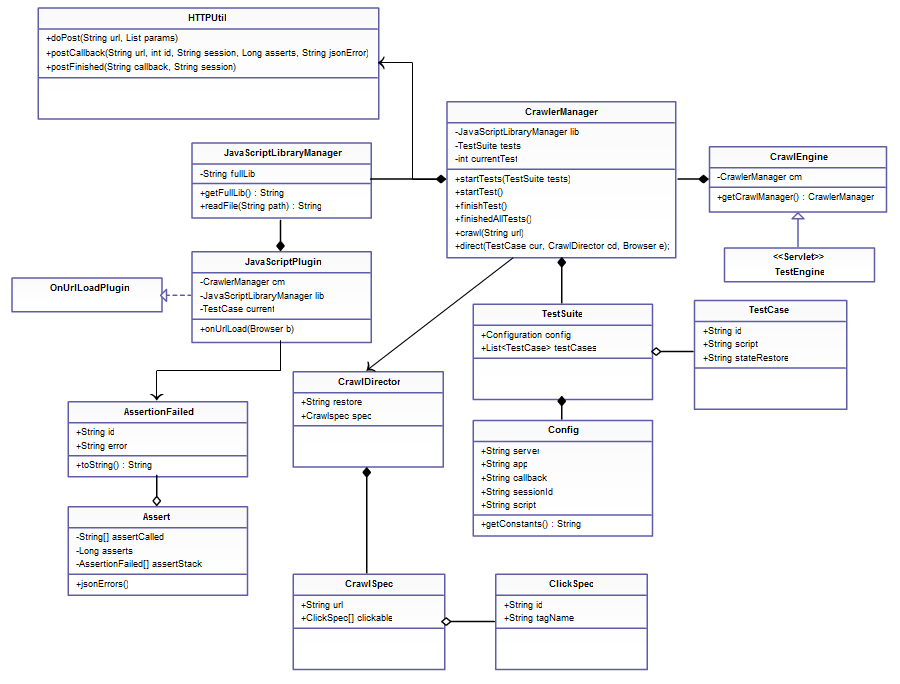
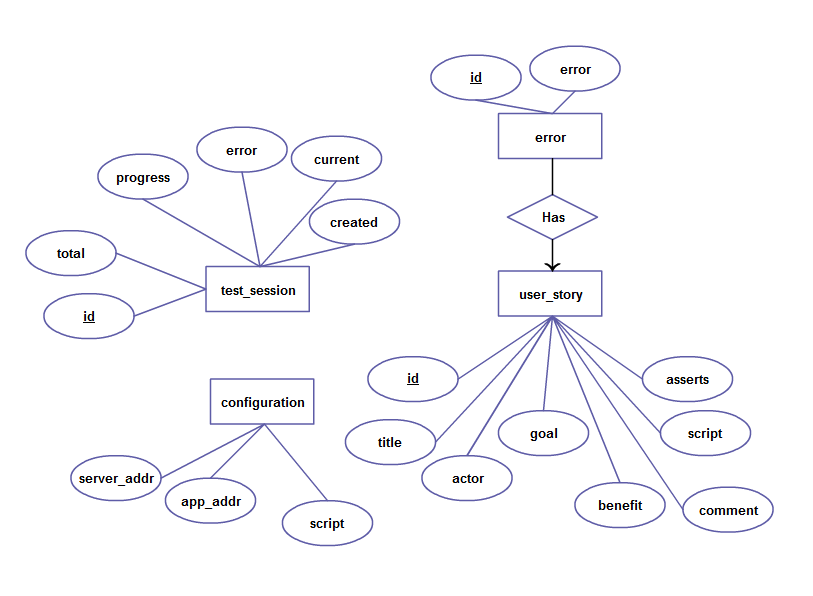

Feature Testing with Crawljax and JavaScript
Developer Guide
This document will provide low-level specifics on the design and implementation of both the Crawljax Test Server and the Sample User Story Wiki. The files needed for this guide are found in the Git Repository for the project.
Crawljax Test Server
The Crawljax Test Server is implemented in Java and makes use of a Java servlet container to provide RESTful (HTTP) access to test methods
HTTP API
POST http://server/CrawlJaxServer/TestEngine (text/xml)
The API only has one call for posting test cases. A POST request issued to the servlet at CrawlJaxServer/TestEngine with a well-formatted XML file will start the CrawlJax engine (make sure to set the POST content to text/xml).
The expected XML format is as follows:
<test-suite>
<config>
<server>http://crawljax/server/location</server>
<app>http://test/application/location</app>
<script>//Setup Script</script>
<callback>http://url/to/call/back</callback>
<session>sessionId</session>
</config>
<case id="2">
<script>Assert.assertTrue("id",12==12,
"numbers fail to work"); etc...</script>
</case>
<case id="3">
<script>//Script for test case 3</script>
</case>
</test-suite>config/callback is the URL you'd like CrawlJax to call when finished a test case. This will be formatted as follows:
POST http://callback/url (text/urlencoded)
Parameters:
id - the id of the test casesessid - the session id given in config/sessionIderrors - a JSON encoded list of errors, or {} for no errorsasserts - the total number of assertion statements that were executed for the case.Implementation
How this works:
XML is posted to TestEngine and parsed into a TestSuite. This TestSuite is passed to the CrawlerManager (on a new Thread), via startTests. For each TestCase in the TestSuite, startTest is called, and the currentTest counter is incremented upon completion (finishTest). Each time finishTest is called, the url callback provided in the Configuration is called. When all TestCases complete, finishedAllTests() is called, the url callback is called with finish=true. The CrawlerManager sets up a CrawlJax crawler with a JavaScriptPlugin for each TestCase. When the browser moves to a new page, the JavaScriptPlugin's onUrlLoad method is called, and the script attribute of the current test case is executed. Any assertions that happened are returned to the CrawlerManager and posted along with any errors. If a CrawlerDirection is received, the EmbeddedBrowser is directed to go to the URL, or the CrawlerConfiguration in CrawlerManager is modified.
User Story Wiki
Entity Relationship diagram for the Sample User Story Wiki (which has a MySQL database back-end)
The Sample User Story Wiki is a php application. The main php files and their functions are:
- db.php
Declares username/password/database variables. Change if you need to connect to a different database.
- head.php
Main function repository. Class for User Story, all the database code needed to populate it. Populates variables for main.php and other files.
- main.php
Main application view. Displays information about user stories, test progress, defines actions for forms.
- userstory.php
View that shows the User Story form (normally embedded in main.php).
- configure.php
View that shows up when configure is clicked.
- runtest.php
Called by AJAX function to start tests. Posts XML to the Crawljax Test Server.
- testdone.php
Called back by the CrawlJax Test Server with parameters. Populates database.